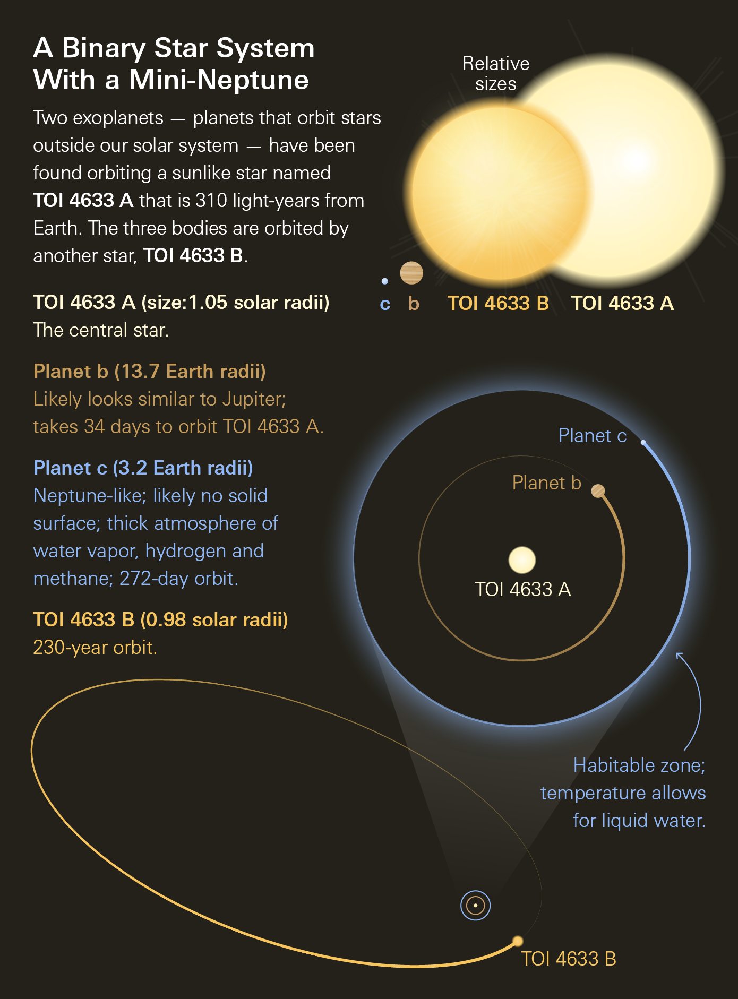
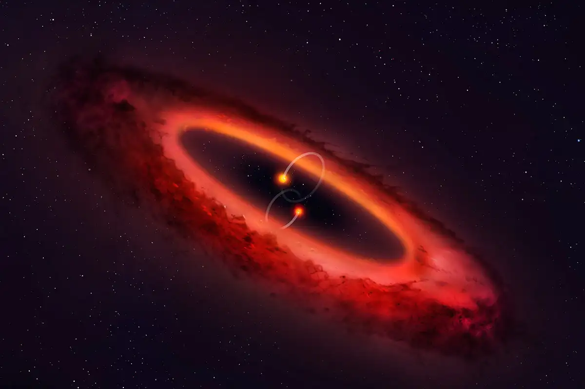

BINARY-STAR PLANETARY SYSTEMS

A binary-star planetary system is a planetary system hosted by two stars orbiting their common center of mass. Binary systems are extremely common in our galaxy—many stars are born in pairs or higher multiples.
Planets can exist in binaries. In an S-type orbit, a planet orbits one star while the other star is distant. In a circumbinary orbit, a planet orbits around both stars together.
Key ideas
- Center of mass: both stars orbit a shared barycenter.
- Stable zones: some orbital distances are stable, others are chaotic.
- Evolution: mass transfer between stars can create novae and X-ray binaries.
